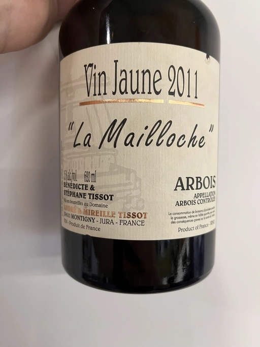

- Type
- White Still, Dry
- Producer
- Andre et Mireille Tissot
- Vintage
- 2011
- Location
- France, Arbois AOC
- Grapes
- Savagnin
- Alcohol
- 15
- Sugar
- NA
- Price
- 3256 UAH, 3700 UAH
- Cellar
- 1 bottle
Ratings
There are no ratings of this wine yet. It’s waiting for the right moment, which could be today, tomorrow or even in a year. Or maybe, I am drinking it at this moment… So stay tuned!